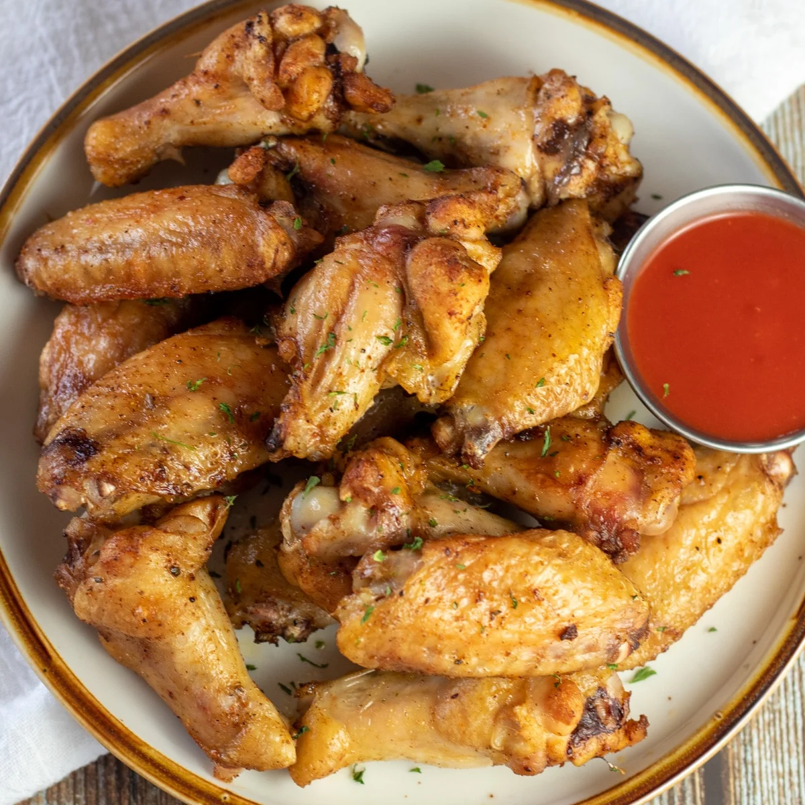

Isuu's famous homemade chicken wings

Take a look at my famous homemade baked chicken wings
Homemade baked chicken wings taste amazing. Plus an added bonus is that it is much healthier than fried chicken wings so you will not feel bad eating them.
The following items are needed to create my special homemade baked chicken wings
- 2 cups brown sugar
- 1 cup yellow mustard
- ¼ cup soy sauce
- 5 pounds chicken wings, cut into thirds and tips discarded
- Any sauce of your choice that you would like to coat the wings in or have on the side
Since we have everything needed let's get to work
- Mix brown sugar, mustard, and soy sauce together in a bowl. Measure 1/4 cup marinade for basting and transfer to a small bowl; cover and refrigerate.
- Place wings in a large resealable bag. Pour remaining marinade over wings, coating well; squeeze out excess air, and seal the bag. Marinate in the refrigerator for at least 2 hours and up to overnight.
- Preheat the oven to 375 degrees F (190 degrees C).
- Remove wings from marinade, shake off any excess, and transfer them to a baking sheet. Discard the remaining marinade.
- Bake in the preheated oven for 30 minutes. Baste wings with reserved 1/4 cup marinade; cook, basting every 10 minutes, until chicken is no longer pink in the center, about 30 more minutes.
- Now for the final step you can coat the wings in the sauce of your choice or have the sauce you chose on the side